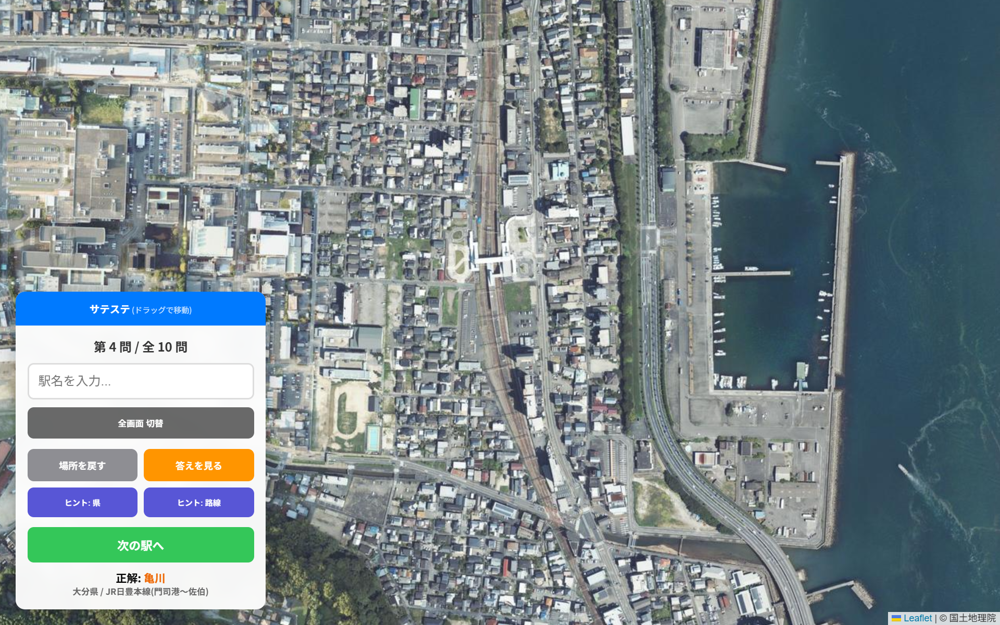
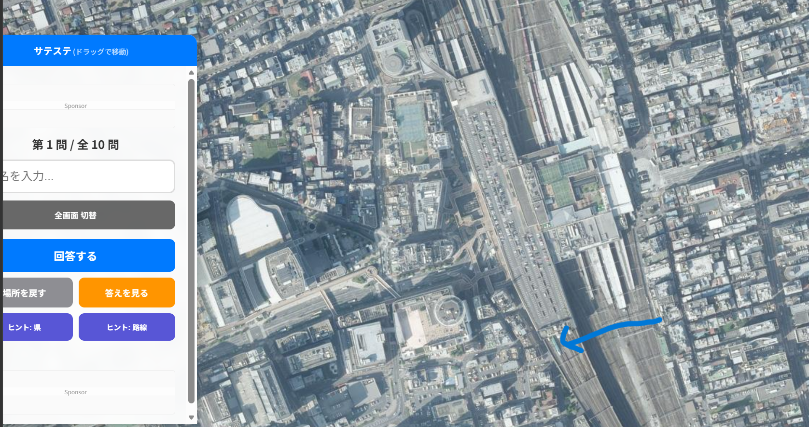
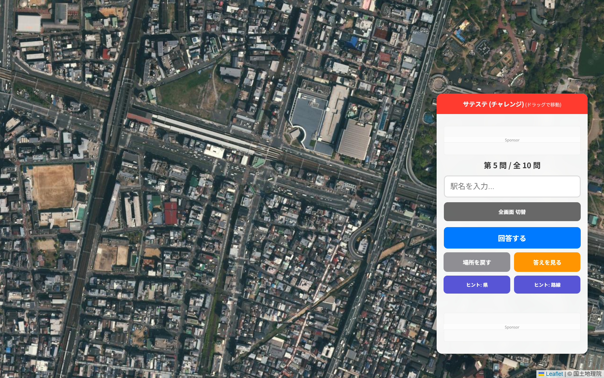

サテステの遊び方
1. モードを選択する
本気でスコアを競う「チャレンジモード」か、自由に設定して遊べる「フリーモード」を選んでください。
2. 出題範囲を設定する
都道府県や鉄道会社、路線などで絞り込めます。地図の操作を制限する「ハードモード」も選択可能です。
3. チャレンジモードの採点
1問最大2,000点（10問合計20,000点）で、正確性と解答スピード、ヒントの使用有無で判定されます。
| ランク | 得点率 | スコア目安 |
|---|---|---|
| SSS | 90%以上 | 18,000点〜 |
| SS | 80%以上 | 16,000点〜 |
| S | 70%以上 | 14,000点〜 |
| A〜D | 70%未満 | 14,000点未満 |
ハイスコアのための攻略テクニック
「サテステ」は、地理的知識、駅の構造、そして街並みからの想像力が試される非常に奥の深いゲームです。ここでは高得点を目指すための攻略ヒントを詳しく解説します。
1. マップを広く見る
まずはマップを広く見ることです。駅の構造はもちろんのこと、まわりに他の鉄道路線が写っていないかどうか、都会か田舎なのか...など見るべきポイントは多々あります。
見るべきポイントの例
- 海や山、川などの地形と駅との位置関係
- 他の鉄道路線の有無
- 周りの道路の形状
- 建物の種類や数
眺めているとそれだけで「あの駅かも！」とピンとくることもありますよ。
2. 駅の構造を見る
次にみるのは駅の構造です。商業施設併設の駅？駅舎はある？など駅の規模を見てみましょう。駅舎の形もヒントになります。
- 橋上駅：線路をまたぐように駅舎があるタイプ。近年、再開発された郊外の駅に多いです。
- 高架駅：高架区間にあり、その下に改札があるタイプ。都市部や新幹線駅に多いですが、地方でも連続立体交差事業が進んだ場所にも見られます。
- 地下駅：航空写真では見えませんが、地下駅がある都市はある程度絞り込まれます。
- 貨物ターミナル併設：膨大な数のコンテナが並ぶエリアが隣接していれば、それは付近に貨物拠点がある駅ですね。例えば吹田、稲沢、五稜郭などです。
また、ホームの数や「複線か単線か」も重要です。線路が1本ならローカル線や支線、複々線ならJR中央線、小田急小田原線、JR京都線などの主要幹線が候補に挙がります。
電化・非電化の判別
線路をよく見ると、連続して小さな線（架線柱）が見えることがあります。これがあれば電化区間です。

ホームの形状
- 島式・相対式：標準的な形状。大手私鉄やJRの多くの駅で見られます。
- 2面3線：ホーム2つ、線路3本。折り返し設備がある主要駅や、東海道・山陽本線などの主要幹線に多いです。
- 新幹線駅：非常にホームが長く、通過線を持つ独特の形状が多いです。
3. 地形と方角を読み解く
- 川と橋：大きな川を渡る直前・直後の駅は特定しやすくなります。
- 海岸線：海が見える場合、その方角やリアス式か直線的かという形状が大きなヒントになります。
- 山の迫り方：トンネルの出入り口が近い駅は山間部であることが分かります。
- 線路の方向：サテステは上が北に固定されています。路線の向きと周辺の雰囲気から駅を絞り込めます。
4. 車両の両数と色
写り込んでいる車両の長さや色から町や路線の規模を絞り込めます。派手な色の車両は決定打になることもあります。

例えば青緑色の車両（E5系/H5系）が見えれば、東北・北海道新幹線の駅であることが分かります（画像は大宮駅）。
地域特有の特徴
- 北海道：主要都市は碁盤の目状の街並みが多く、家の屋根は赤や青が目立ちます。また、板1枚のような極めて小さな駅が存在するのも特徴です。
- 山陰地方：オレンジ色の「石州瓦」を利用した屋根の家が多く見られます。
- 海岸線：西側に海がある場合、内房線（君津〜館山）、紀勢本線（和歌山〜紀伊田辺）、大村線などを想定し、電化や複線の有無で絞り込みます。
駅の中心からのズレ
表示されたとき中心からずれている場合、近くに別の駅（地下駅など）が隠れている可能性があります。

例えば、地下に動物園前駅があり、地上の新今宮駅と混同しやすいケースなど、注意深く観察してみましょう。
「なぜここに駅があるのか？」という視点で街を眺めることが、クイズ攻略の最大の近道です。